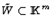
such that if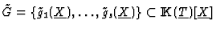
is a Gröbner basis of the ideal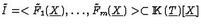
\subset{\rm I\kern -2.2pt K\hskip 1pt}(\underline{T})[\underline{X}]$">, and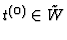
, then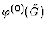
is a Gröbner basis of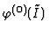
. This set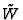
of sufficient conditions on the parameters is defined by: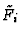
are 0,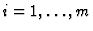
,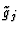
are 0,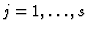
,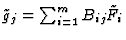
; none of the denominators of Bij are 0.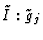
) and one elimination ideal (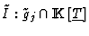
) for every polynomial in the basis.